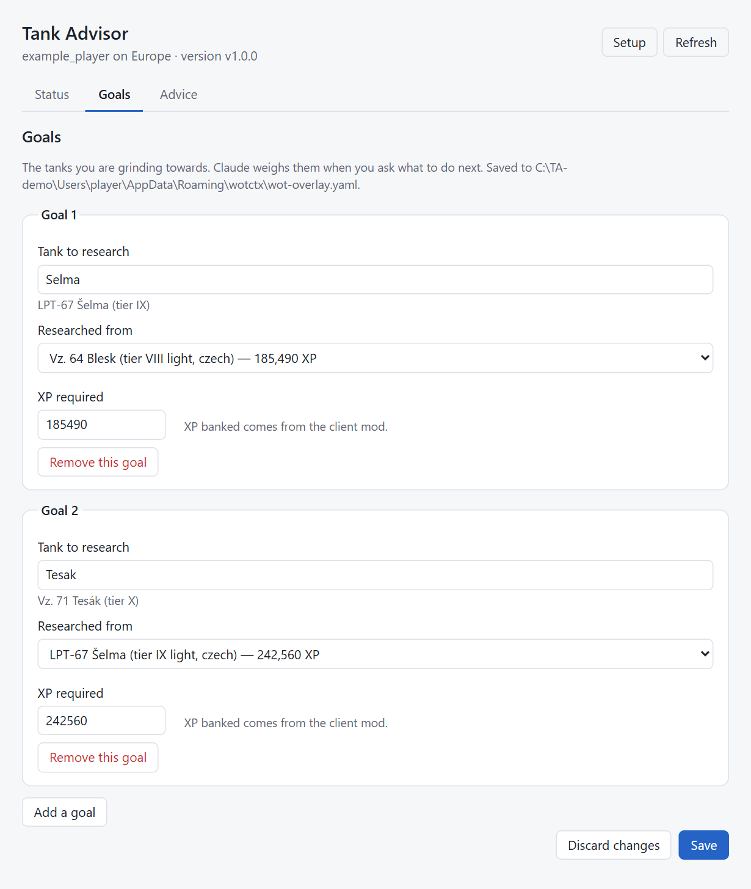

wot_brief, wot_candidatesShort answer: Your next tank is the LPT-67 Šelma, the next step on your Blesk → Šelma → Tesák goal. You need about 19,195 more XP on the Blesk — roughly 22 battles, or 3 one-hour sessions. The XP will come quickly; the real problem is credits. You're about 2.71M short, so play credit-earners alongside the Blesk.
Why: … The Blesk is your best tank by WN8 (2,507 WN8, 51.9 % win rate, 54 battles) — that's only 54 battles, so it's an early sign, not proof …
Data: account and stats 12 min old, XVM WN8 values from 2026-09-12, overlay 2026-09-18.